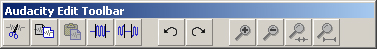

The Lesson
The Edit Toolbar
The Edit Toolbar is the last Toolbar the user is presented with (see Figure 5). It provides shortcuts to the Edit Menu items.

Figure 5
The Edit Toolbar when undocked
- Cut removes the selection and places it in the clipboard.
- Copy duplicates the selection storing it in the clipboard.
- Paste appends or inserts the Cut or Copied selection to either a new track or just after the cursor.
- Trim Outside Selection removes any component of the waveform that is not selected.
- Silence Selection discards any content within a selection and replaces it with silence.
- Undo discards the previous action.
- Redo repeats the previous action.
- Zoom In magnifies the selected area of the waveform.
- Zoom Out reduces the selected area of the waveform.
- Fit Selection in Window adjusts the highlighted area of the waveform so that it is within the viewable area of the workspace.
- Fit Project in Widow adjusts the waveform so that it is within the viewable area of the workspace.